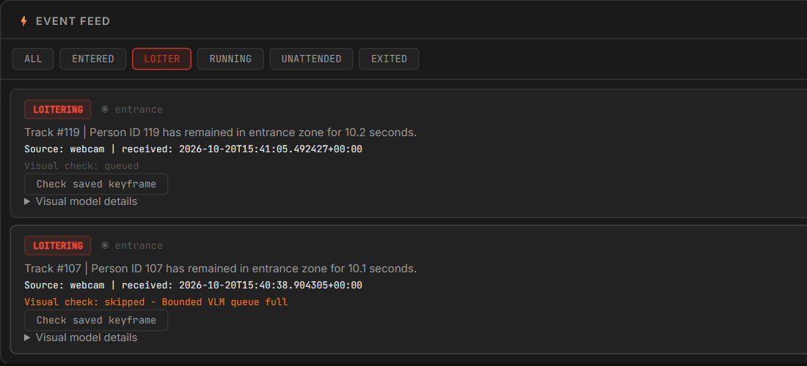

A moment. With context.

SentinelAI
Video intelligence · Local evidence
YOLO/ByteTrack observations become timestamped events, saved frames and an inspectable FastAPI dashboard. Local model responses connect to their supporting evidence. Separate from the ongoing traffic-signal research.
YOLO / OpenCVFastAPISQLite